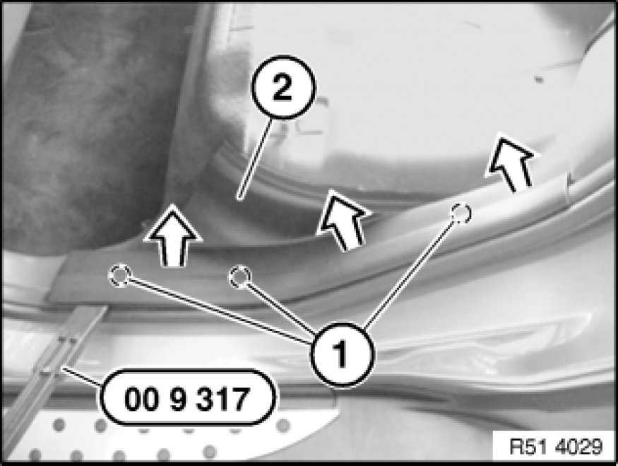
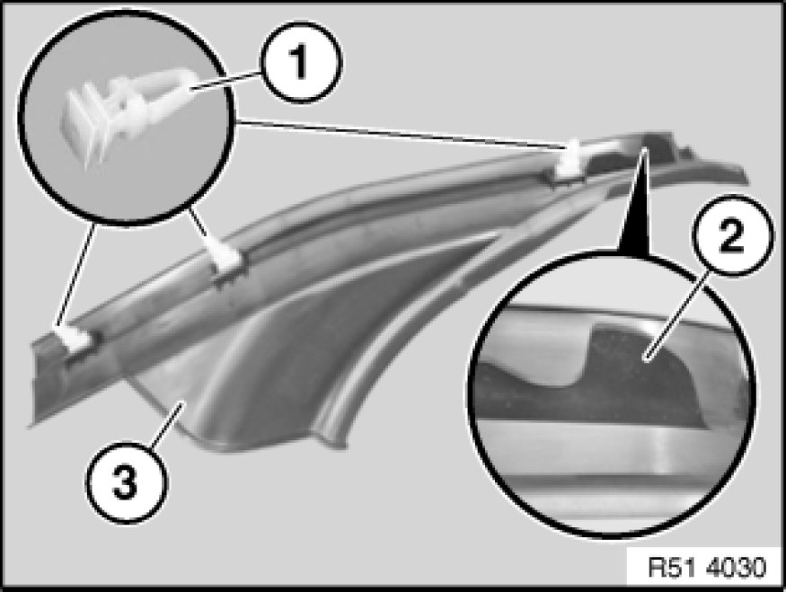

51 47 030 Removing and Installing/Replacing Rear (Inside) Left or Right Entrance Cover Strip
51 47 030 - Removing and installing/replacing rear (inside) left or right entrance cover strip

Special tools required:
- 00 9 317 00 9 317 Trim Panel Wedge

Necessary preliminary tasks:
- Remove rear seat (through-loading system) Rear Seat, Through-Loading

Unclip clips (1) on entrance cover strip (2) with special tool 00 9 317 00 9 317 Trim Panel Wedge.
Remove entrance cover strip (2) towards top rear.

Installation:
Clips (1) and guide (2) on entrance cover strip (3) must not be damaged.
If necessary, replace faulty clips (1).